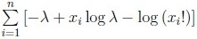
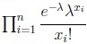
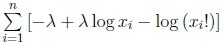
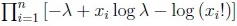

Home / Past papers / MLT Quiz 1 / this paper
2024 July07: IIT M AN EXAM QIM4 - 07 Jul 2024
Elapsed 00:00


- Both k1 and k2 are valid kernels.
- k1 is a valid kernel, but k2 is not a valid kernel.
- k2 is a valid kernel, but k1 is not a valid kernel.
- Neither k1 nor k2 is a valid kernel.


Kernel PCA with a polynomial kernel of degree 3 is run on a dataset of 100 data-points. Let ϕ be the transformation corresponding to this kernel. If the largest eigenvalue of the centered kernel matrix is 10, find the largest eigenvalue of the covariance matrix of the transformed dataset, where ϕ is used to effect the transformation.


Comprehension passage - the questions below it refer to this
Based on the above data, answer the given subquestions.

Find the variance of the dataset along the first principal component.
Find the variance of the dataset along the x-axis.


Comprehension passage - the questions below it refer to this
Based on the above data, answer the given subquestions.

If (x1, y1) is the mean of the first cluster after convergence, find the value of x1 + y1.
If (x2, y2) is the mean of the second cluster after convergence, find the value of x2 + y2.
Comprehension passage - the questions below it refer to this
In the context of Bayesian estimation, consider a Beta prior for the parameter p of a Bernoulli distribution:
 In the context of Bayesian estimation, consider a Beta prior for the parameter p of a Bernoulli distribution: The dataset has 8 ones and 5 zeros. Based on the above data, answer the given subquestions.
In the context of Bayesian estimation, consider a Beta prior for the parameter p of a Bernoulli distribution: The dataset has 8 ones and 5 zeros. Based on the above data, answer the given subquestions.What is the posterior?
- Beta(12, 8)
- Beta(11, 7)
- Br(0.5)
- Beta(8, 5)

Comprehension passage - the questions below it refer to this
Based on the above data, answer the given subquestions.

Find the log-likelihood of the dataset under this distribution.




Consider a dataset that has 25 data-points. The data-point xi and its frequency is given in the following table:
 Consider a dataset that has 25 data-points. The data-point xi and its frequency is given in the following table: In case the table is not clear: the value 0 appears once in the dataset, the value 1 appears four times in the dataset, and so on. Find the maximum likelihood estimate for the parameter λ of the Poisson distribution given this dataset.
Consider a dataset that has 25 data-points. The data-point xi and its frequency is given in the following table: In case the table is not clear: the value 0 appears once in the dataset, the value 1 appears four times in the dataset, and so on. Find the maximum likelihood estimate for the parameter λ of the Poisson distribution given this dataset.
Consider a dataset that has 25 data-points. The data-point xi and its frequency is given in the following table: In case the table is not clear: the value 0 appears once in the dataset, the value 1 appears four times in the dataset, and so on. Find the maximum likelihood estimate for the parameter λ of the Poisson distribution given this dataset.Answer key
- Q1 (MCQ, 2 marks): A
- Q2 (MCQ, 3 marks): A
- Q3 (MSQ, 3 marks): A, B
- Q4 (SA, 3 marks): 0.1
- Q5 (SA, 3 marks): 0.8
- Q6 (SA, 4 marks): 16
- Q7 (SA, 4 marks): 0.25
- Q8 (SA, 2 marks): 3
- Q9 (SA, 1 marks): 2
- Q10 (MCQ, 2 marks): A
- Q11 (SA, 2 marks): -5
- Q12 (SA, 2 marks): 9
- Q13 (MCQ, 2 marks): A
- Q14 (SA, 2 marks): 0.6
- Q15 (MCQ, 2.5 marks): A
- Q16 (SA, 2.5 marks): 2.52
Concepts this paper tests
Auto-generated summary from the source site. Handy as a checklist; the lessons above explain each idea from scratch.
Summary of Core Topics, Concepts, Principles, and Equations
1. Principal Component Analysis (PCA)
- Concepts: Projection of data onto principal components, reconstruction error, covariance matrix, eigenvalues, and eigenvectors.
Equations:
- Projection of a data point onto principal components and :
- Reconstruction error:
- Variance along a principal component:
where is the covariance matrix.
2. Kernel Methods
- Concepts: Kernel functions, polynomial kernels, kernel PCA, valid kernels.
Equations:
- Polynomial kernel of degree :
- Kernel PCA transformation and eigenvalue calculation.
3. Gaussian Mixture Models (GMM) and EM Algorithm
- Concepts: Mixture models, expectation-maximization (EM) algorithm, posterior probabilities.
Equations:
- Posterior probability in E-step:
- Probability of a data point belonging to a component:
4. K-Means Clustering
- Concepts: Initialization methods (e.g., k-means++), cluster means, distance metrics.
Equations:
- Probability of choosing a point as the next mean in k-means++:
5. Bayesian Estimation
- Concepts: Prior and posterior distributions, Beta distribution, maximum likelihood estimation (MLE).
Equations:
- Beta distribution:
- Posterior distribution for Bernoulli parameter :
- Expected value of the posterior:
6. Poisson Distribution
- Concepts: Probability mass function, log-likelihood, maximum likelihood estimation.
Equations:
- Poisson probability mass function:
- Log-likelihood for Poisson distribution: